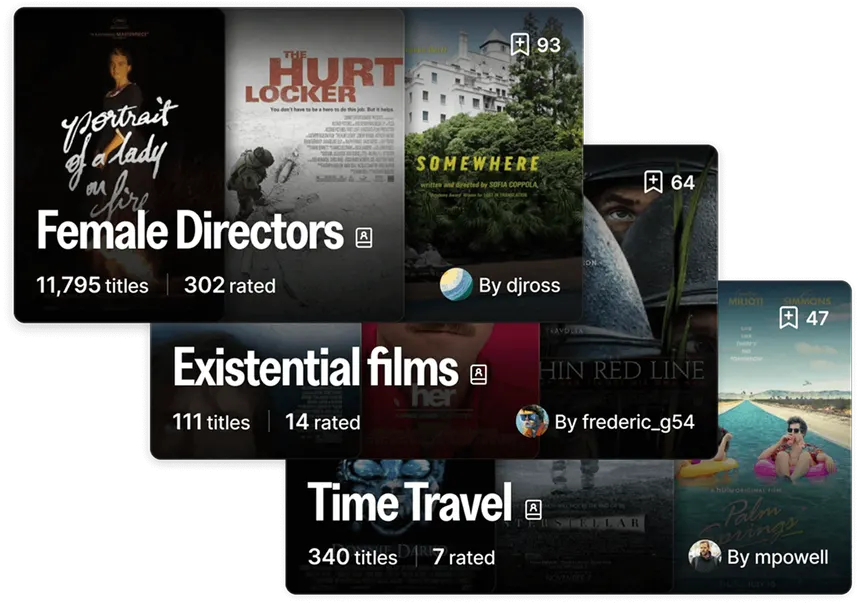
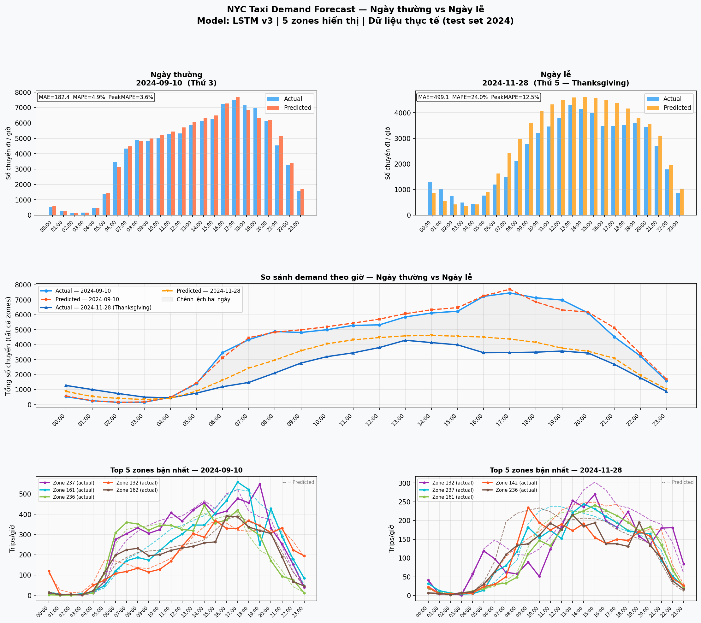

Data Practitioner (Entry-level)
I am a final-year Information Technology student at Thuy Loi University (Southern Campus), aspiring to become a high-impact Data Analyst. My analytical philosophy centers on uncovering the root causes of complex problems to drive data-informed decisions. With a solid foundation in Excel, SQL, Power BI, and Python, I am committed to refining my critical thinking and observational skills. My long-term goal is to transition into a Strategic Consultant role, utilizing my current analytical expertise to create sustainable value for any organization.
Built an end-to-end automated data platform featuring Medallion architecture and ML-driven revenue forecasting (6-8% MAPE). This system optimizes multi-branch marketing strategies by providing deep visibility into ROI, LTV, and customer retention.
View project →
Architected a Microservices-based MLOps platform for instant movie recommendations. The system features a Hybrid Data Ingestion (Batch & Streaming), automated ML Lifecycle with Model Registry, and a centralized monitoring system to track Model Drift and infrastructure health.
View project →End-to-end credit risk platform tren 2.26M khoan vay Lending Club (2007-2018): PD Model AUC=0.9702, Early Warning System predictive AUC=0.7412, va IFRS 9 ECL pipeline cho thay ML-PD phat hien them $404M du phong thieu hut so voi PD tinh.
View project →
Lakehouse end-to-end với Spark, Kafka, Delta Lake trên MinIO; batch và streaming song song, LightGBM & LSTM cho dự báo theo zone và giờ, dashboard Streamlit với inference gần realtime.
View project →